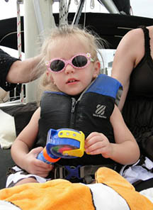

We have just finished our fourth NYE sunset sail with Jan and Tim. Each year, we love it so much we book the next year as we leave the boat! This year, we had the most wonderful sunset, beautiful blue skies, gentle wind.
Jan and Tim are like old friends now.......and we look forward to many years of celebrating friendship and the end of an old year and beginning of a new one with Jan and Tim.
PS: Rumor has it that we are booked through 2020! We are looking forward to it! Thanks again, Jan and Tim. Wonderful way to end the year.
Connie ...
What better way to celebrate a birthday. Jan and Tim made certain everything was perfect. The roses, chocolates and Chris Cross's "Sailing" completed an excellent adventure. The sail was both peaceful and thoughtful. We certainly plan on doing this again and again.
Theodora ...
Fabulous experience sailing. My husband and I recently experienced the death of our son and I wanted my husband to have a wonderful memory this year. I knew he loved to sail so as a surprise, I rented the boat for four hours for ourselves to sail intercoastal waters and the gulf.
Jan and Tim are the most compassionate and caring people in the world. My husband used to be a sailing instructor and said this was beyond anything he had imagined. Even if you do the 2 hour cruise, you will not regret spending one dime on this adventure. We will return for it every year. We love these people!
"Nursing88" ...
I've been sailing 4 or 5 times with Jan and Tim and the Key Breeze. It's better than a massage. Comfortable boat, big enough for you and your honey and a few friends, yet small enough to be personal. This is how vacation should be! And I live in Sarasota. I've brought my beginning swimming classes out on the boat and it's the perfect relaxing afternoon for them. The boat doesn't tip or lean, and the skipper would far prefer to be under sail rather than motoring. The dark chocolate didn't hurt, either. Five stars.
"melondash" ...
We have gone with Captain Tim and Janet before and had wonderful sails with them, but this was an incredible experience! We took our two grandsons and they were trained on sailing the boat and got extensive time at the helm. The wind was perfect and we enjoyed the best sailing experience I have ever had. It was the best in every way! Our hosts were more than accommodating. You really need to book a cruise with them!
Mike ...
We first met Jan and Tim during a cruise we took in March of 2011. We were visiting my father and wanted a romantic sunset cruise. We loved Jan and Tim from the beginning and returned for another cruise on our honeymoon visit in August 2011 to Sarasota for another cruise. Then we moved to Sarasota and I took my son and his wife for an adventure sailing. Finally this week, I called on Tim to take us out to drop my father's ashes in the Gulf. They were terrific during the whole experience. We've laughed and cried together and I am proud to call them my friends. If you want to get on the water, sail with Key Sailing under Tim and Jan. You will NOT REGRET it!!!
Kristine ...
Sailing with Tim and Jan Solomon aboard the Key Breeze 41 foot sailboat is an experience you don't want to miss! With years of sailing experience, as well as being world travelers, they are knowledgeable as well as delightful company. On the day we sailed the winds that morning were perfect so we were able to truly "sail" without using the motor. It was heavenly! We saw dolphins and a lot of interesting sights and the time went much too fast. Their motto "Fresh Air, Fine Chocolates, and a few hours of Peace on Earth" soothes the soul. No wonder they have won so many distinguished awards. We will definitely sail with them again the next time we are in Florida.
Susan ...
Jan and Tim were such good hosts we felt like we were sailing with friends. The boat was beautiful and the scenery even better but our wonderful hosts were the best part. We will come back again and again. I cannot recommend this enough. I'm relaxed, refreshed, tan, and I made new friends. Book your sail today!
Kristin ...
I was just in Sarasota last weekend visiting my best friend and was lucky enough to take a sailing trip with Key Sailing and it was WONDERFUL!!! I was a little nervous to go as I have not done much sailing, but the water was calm, the ride was smooth and you could not ask for better hosts!!!!! So accommodating and so nice, can't wait to go again the next time I go back to Florida:) What an AMAZING time we had! I went from being so nervous that I wasn't sure I wanted to go.....to I didn't want to get off the boat!
Jessica ...

Everyone I know is having a difficult time finding the "perfect" activity for family members as they visit Sarasota over the Holidays. That brought back my memories of a sailing trip we took on the Key Breeze on the Fourth of July this year. We didn't want to fight the insects and crowds as we waited for the fireworks to begin. We instead, opted to watch the fireworks from the water of Sarasota Bay. What an absolutely beautiful experience it was. We were able to observe all of the land displays, plus all the fireworks from the shoreline in downtown Sarasota, and all the other bays. It was so exciting. And we had a wonderful time meeting and getting to know, another couple on board. It's always nice to make new friends, and hear stories from all over our country and other countries. Hopefully, we will sail with our new friends again next year.
Nancy ...
My husband and I have sailed 4 times with Tim and Jan. We have sailed with our grown children and by ourselves, sunset and day cruises, and each time is better than the last. Jan and Tim give very personal attention and are very knowledgeable about the area. They will leave you alone if you like, or converse at length about their adventures if you inquire. We have sailed several different outfits in several different Florida cities and Key Sailing is by far the best. I highly recommend them - can't wait until our next sail!
Shelly ...
Jan and Tim advertise a few hours of peace on earth and that is what we found. The sail itself was wonderful and we really enjoyed the tour of the boat and the chocolate treats. As well, we all felt this trip is excellent value. Why did it surpass my expectations? Jan and Tim create a warm, friendly environment and truly care that their passengers have the best possible sailing experience.
Nancy ...
Our family of five went on a two-hour morning sail on a Wednesday. Tim and Jan were great, starting with our initial inquiry all the way through our sail. We had a nice, relaxing time, and even saw a few dolphins along the way. They were very helpful and friendly to our kids as well. We'll definitely call them again the next time we're in town.
Mindy ...
Jan and Tim took my family out to intern my parents' ashes. In addition to the beautiful weather and sail, Jan and Tim were so compassionate and kind. It was a memorable day, and we were blessed to have them provide a beautiful service.
"Choving" ...
Tim and Jan, This was the most beautiful sunset! We’ll remember this as the greatest night of our honeymoon for years to come.
Tyler and Shawn …
We chartered a sunset cruise, my wife and I and our teenage kids (15 and 17), and family friends. Tim and Jan were excellent hosts and made us feel very welcome. They have a great knowledge of the area and gave us an excellent tour. The yacht itself was beautiful and comfortable.
This is an awesome way to create some family memories. It was a great value.
Jamie ...
We couldn't have asked for a better time--a beautiful late afternoon sail with a terrific captain and first mate. Our family trio celebrated a reunion, a special birthday-- and made great memories. Thank you Jan and Tim. You're the best!
Judy ...
We cruised with Tim & Jan on a glorious evening set to have a wonderful sunset, and a full moon rise. The photos bring a smile to my face, remembering the relaxed evening we spent together with our family.
They will accommodate small groups, and their "open" charters are limited to 6 people. (If you get a babysitter for your kids, you won't find someone else's on yours). If you are wanting to sail with your children, you will have the whole boat to yourselves! No worries, they've got you covered! Prices are super affordable, and because of that, its in your best interest to book ASAP!
Marta ...
My fiancé proposed during the sail trip and it couldn't have been a more magical experience. Jan worked so well with my fiancé to plan this surprise for me and they completely pulled it off! The trip was beautiful and relaxing. Jan and Tim are very warm, friendly and fun to talk to. Our trip was originally supposed to be a sunset trip, but it was raining and Jan made sure we could do it first thing the next morning. I was already in paradise on this boat BEFORE my fiancé proposed-so as you can imagine the whole thing was really something special, and it was one of the best days of my life.
Without a doubt we will come back. Not only is it an awesome sailboat ride, but it is also very meaningful for us now. We will definitely make it a tradition to sail with them whenever we are in town.
Kairi ...
It was a 33 year old dream to take a sailboat into the sunset, and Key Sailing made that possible for me. Captain Tim and his wife Jan were there to please us and make our experience the best one possible. We went out on a cold, January day, and they had blankets and pillows ready to make us comfortable. It was a beautiful sailboat which allowed for a beautiful sunset, even on a cold, blustery day. The boat ride was very family-oriented. I was amazed at how much joy Tim and Jan had as they carried out their job, and their joy was contagious. Any time you visit Sarasota, this is a must-do activity!
Maya ...
We and two other couples chartered a 3-hour sunset cruise which certainly lived up to our expectations--and exceeded those of a couple of us "sailors," one who was afraid of the water in general, and one who had a very bad back and wasn't up for any 'adventures'. We especially appreciated that we were able to have exclusive charter of the boat; there was comfortable space for the six of us to move around as desired and also made the experience more intimate and relaxed. The conditions were ideal for our purposes--just enough soft breeze to sail with, calm waters, and pretty sunset--just as Jan had promised--and Tim and his daughter were a great crew, providing interesting information about areas as we sailed past. We were all reluctant to end such a perfect evening. Our sail was serene and relaxing, and it was definitely a highlight of our stay in Sarasota.
Marlene ...
We went out with 4 children, ages 2 - 11. All four enjoyed the boat ride immensely, as did the adults. Great captain and assistant - very kind, super friendly. They provided snacks and drinks. Sent us pictures they took on the boat. Very safety conscious with the kids. Highlights included dolphin sightings and kids driving the boat! Wonderful time.
Robin ...
"I went out on a three hour sail with a group of mixed levels of sailing experience on a part educational and part recreational sail that was offered through local community education. Everyone had fun and the teaching while doing was excellent."